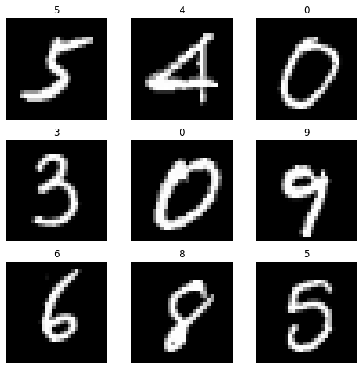
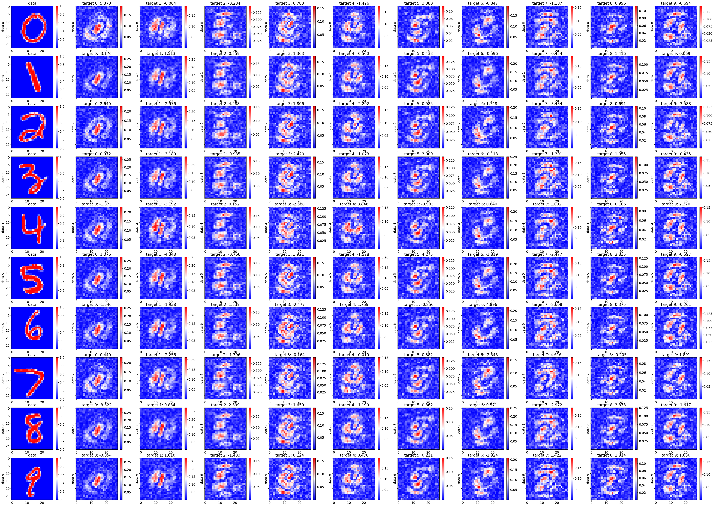
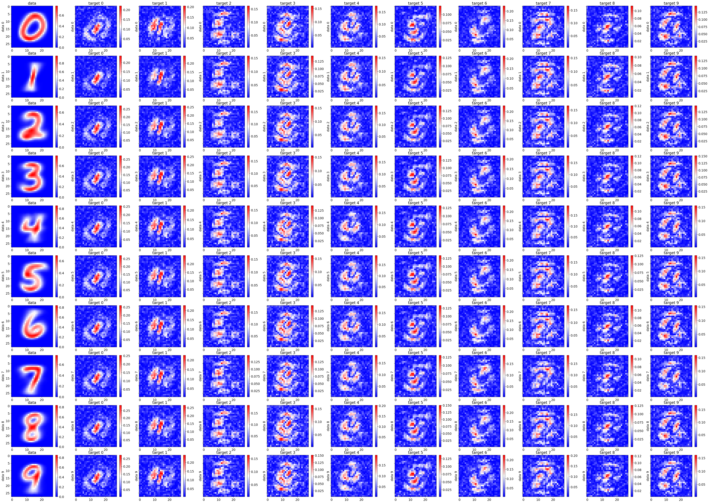
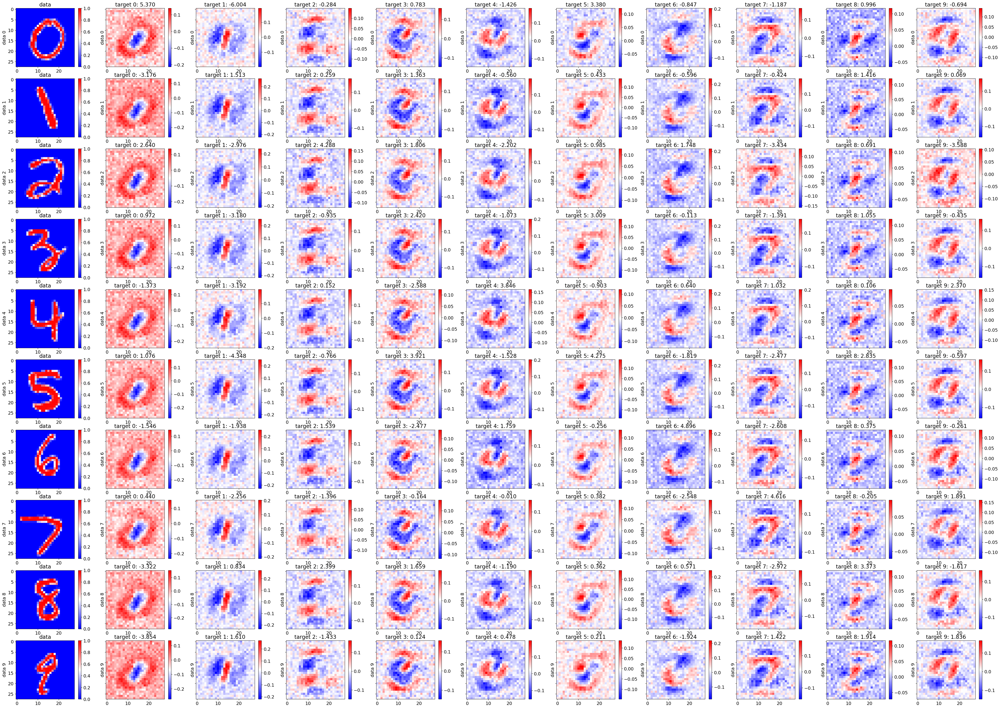
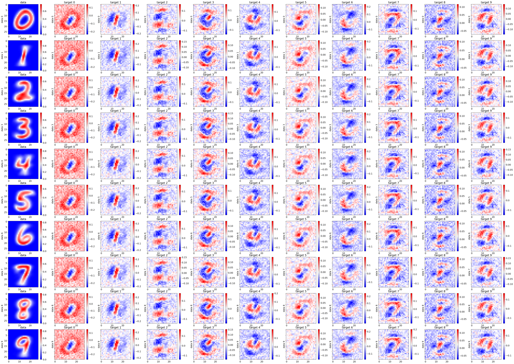

Jun 18-20, 2022: following PyTorch quickstart
Contents
Jun 18-20, 2022: following PyTorch quickstart¶
import torch
from torch import nn
from torch.utils.data import DataLoader
from torchvision import datasets
from torchvision.transforms import ToTensor
# Download training data from open datasets.
training_data = datasets.MNIST(
root="data",
train=True,
download=True,
transform=ToTensor(),
)
# Download test data from open datasets.
test_data = datasets.MNIST(
root="data",
train=False,
download=True,
transform=ToTensor(),
)
LABELS = list(range(10))
IDX_LABELS = {}
for v, k in enumerate(LABELS):
IDX_LABELS[k] = v
tr_data = []
for idx in range(len(training_data)):
img, label = training_data[idx]
if label not in LABELS: continue
tr_data.append((img, IDX_LABELS[label]))
te_data = []
for idx in range(len(test_data)):
img, label = test_data[idx]
if label not in LABELS: continue
te_data.append((img, IDX_LABELS[label]))
batch_size = 64
# Create data loaders.
train_dataloader = DataLoader(tr_data, batch_size=batch_size)
test_dataloader = DataLoader(te_data, batch_size=batch_size)
for X, y in test_dataloader:
print(f"Shape of X [N, C, H, W]: {X.shape}")
print(f"Shape of y: {y.shape} {y.dtype}")
break
Shape of X [N, C, H, W]: torch.Size([64, 1, 28, 28])
Shape of y: torch.Size([64]) torch.int64
import matplotlib.pyplot as plt
labels_map = {
0: "0",
1: "1",
2: "2",
3: "3",
4: "4",
5: "5",
6: "6",
7: "7",
8: "8",
9: "9",
}
figure = plt.figure(figsize=(8, 8))
cols, rows = 3, 3
for i in range(1, cols * rows + 1):
sample_idx = torch.randint(len(training_data), size=(1,)).item()
img, label = training_data[sample_idx]
figure.add_subplot(rows, cols, i)
plt.title(labels_map[label])
plt.axis("off")
plt.imshow(img.squeeze(), cmap="gray")
plt.show()

# Get cpu or gpu device for training.
device = "cuda" if torch.cuda.is_available() else "cpu"
print(f"Using {device} device")
# Define model
class NeuralNetwork(nn.Module):
def __init__(self, out_dim):
super(NeuralNetwork, self).__init__()
self.flatten = nn.Flatten()
self.linear_relu_stack = nn.Sequential(
nn.Linear(28*28, 512),
nn.ReLU(),
nn.Linear(512, 512),
nn.ReLU(),
nn.Linear(512, out_dim)
)
def forward(self, x):
x = self.flatten(x)
logits = self.linear_relu_stack(x)
return logits
model = NeuralNetwork(len(LABELS)).to(device)
print(model)
Using cuda device
NeuralNetwork(
(flatten): Flatten(start_dim=1, end_dim=-1)
(linear_relu_stack): Sequential(
(0): Linear(in_features=784, out_features=512, bias=True)
(1): ReLU()
(2): Linear(in_features=512, out_features=512, bias=True)
(3): ReLU()
(4): Linear(in_features=512, out_features=10, bias=True)
)
)
loss_fn = nn.CrossEntropyLoss()
optimizer = torch.optim.SGD(model.parameters(), lr=1e-3)
def train(dataloader, model, loss_fn, optimizer):
size = len(dataloader.dataset)
model.train()
for batch, (X, y) in enumerate(dataloader):
X, y = X.to(device), y.to(device)
# Compute prediction error
pred = model(X)
loss = loss_fn(pred, y)
# Backpropagation
optimizer.zero_grad()
loss.backward()
optimizer.step()
if batch % 100 == 0:
loss, current = loss.item(), batch * len(X)
print(f"loss: {loss:>7f} [{current:>5d}/{size:>5d}]")
def test(dataloader, model, loss_fn):
size = len(dataloader.dataset)
num_batches = len(dataloader)
model.eval()
test_loss, correct = 0, 0
with torch.no_grad():
for X, y in dataloader:
X, y = X.to(device), y.to(device)
pred = model(X)
test_loss += loss_fn(pred, y).item()
correct += (pred.argmax(1) == y).type(torch.float).sum().item()
test_loss /= num_batches
correct /= size
print(f"Test Error: \n Accuracy: {(100*correct):>0.1f}%, Avg loss: {test_loss:>8f} \n")
epochs = 10
for t in range(epochs):
print(f"Epoch {t+1}\n-------------------------------")
train(train_dataloader, model, loss_fn, optimizer)
test(test_dataloader, model, loss_fn)
print("Done!")
Epoch 1
-------------------------------
loss: 2.303879 [ 0/60000]
loss: 2.301385 [ 6400/60000]
loss: 2.292569 [12800/60000]
loss: 2.289856 [19200/60000]
loss: 2.293896 [25600/60000]
loss: 2.286589 [32000/60000]
loss: 2.268994 [38400/60000]
loss: 2.280642 [44800/60000]
loss: 2.266096 [51200/60000]
loss: 2.251800 [57600/60000]
Test Error:
Accuracy: 38.7%, Avg loss: 2.260369
Epoch 2
-------------------------------
loss: 2.259393 [ 0/60000]
loss: 2.252687 [ 6400/60000]
loss: 2.255758 [12800/60000]
loss: 2.233857 [19200/60000]
loss: 2.247922 [25600/60000]
loss: 2.239133 [32000/60000]
loss: 2.211809 [38400/60000]
loss: 2.238317 [44800/60000]
loss: 2.207583 [51200/60000]
loss: 2.190719 [57600/60000]
Test Error:
Accuracy: 57.8%, Avg loss: 2.199494
Epoch 3
-------------------------------
loss: 2.195975 [ 0/60000]
loss: 2.182597 [ 6400/60000]
loss: 2.201590 [12800/60000]
loss: 2.147905 [19200/60000]
loss: 2.177760 [25600/60000]
loss: 2.164878 [32000/60000]
loss: 2.118531 [38400/60000]
loss: 2.166223 [44800/60000]
loss: 2.110260 [51200/60000]
loss: 2.088508 [57600/60000]
Test Error:
Accuracy: 64.8%, Avg loss: 2.096521
Epoch 4
-------------------------------
loss: 2.088724 [ 0/60000]
loss: 2.063590 [ 6400/60000]
loss: 2.109379 [12800/60000]
loss: 2.002669 [19200/60000]
loss: 2.056015 [25600/60000]
loss: 2.034079 [32000/60000]
loss: 1.959201 [38400/60000]
loss: 2.038738 [44800/60000]
loss: 1.943268 [51200/60000]
loss: 1.915980 [57600/60000]
Test Error:
Accuracy: 69.5%, Avg loss: 1.918711
Epoch 5
-------------------------------
loss: 1.909069 [ 0/60000]
loss: 1.861580 [ 6400/60000]
loss: 1.946492 [12800/60000]
loss: 1.769820 [19200/60000]
loss: 1.844349 [25600/60000]
loss: 1.808385 [32000/60000]
loss: 1.707487 [38400/60000]
loss: 1.829276 [44800/60000]
loss: 1.682959 [51200/60000]
loss: 1.653085 [57600/60000]
Test Error:
Accuracy: 74.1%, Avg loss: 1.643047
Epoch 6
-------------------------------
loss: 1.643863 [ 0/60000]
loss: 1.561215 [ 6400/60000]
loss: 1.683918 [12800/60000]
loss: 1.457243 [19200/60000]
loss: 1.529093 [25600/60000]
loss: 1.484254 [32000/60000]
loss: 1.379937 [38400/60000]
loss: 1.543467 [44800/60000]
loss: 1.365694 [51200/60000]
loss: 1.335289 [57600/60000]
Test Error:
Accuracy: 77.6%, Avg loss: 1.312977
Epoch 7
-------------------------------
loss: 1.341483 [ 0/60000]
loss: 1.224394 [ 6400/60000]
loss: 1.360806 [12800/60000]
loss: 1.146411 [19200/60000]
loss: 1.201128 [25600/60000]
loss: 1.153957 [32000/60000]
loss: 1.068808 [38400/60000]
loss: 1.254604 [44800/60000]
loss: 1.095274 [51200/60000]
loss: 1.062139 [57600/60000]
Test Error:
Accuracy: 80.1%, Avg loss: 1.036966
Epoch 8
-------------------------------
loss: 1.095400 [ 0/60000]
loss: 0.962602 [ 6400/60000]
loss: 1.085940 [12800/60000]
loss: 0.920030 [19200/60000]
loss: 0.963244 [25600/60000]
loss: 0.911444 [32000/60000]
loss: 0.847161 [38400/60000]
loss: 1.035609 [44800/60000]
loss: 0.913459 [51200/60000]
loss: 0.878992 [57600/60000]
Test Error:
Accuracy: 81.6%, Avg loss: 0.852292
Epoch 9
-------------------------------
loss: 0.927835 [ 0/60000]
loss: 0.793309 [ 6400/60000]
loss: 0.896423 [12800/60000]
loss: 0.774447 [19200/60000]
loss: 0.810486 [25600/60000]
loss: 0.755015 [32000/60000]
loss: 0.701839 [38400/60000]
loss: 0.885683 [44800/60000]
loss: 0.795506 [51200/60000]
loss: 0.763001 [57600/60000]
Test Error:
Accuracy: 83.0%, Avg loss: 0.731998
Epoch 10
-------------------------------
loss: 0.814775 [ 0/60000]
loss: 0.681875 [ 6400/60000]
loss: 0.768849 [12800/60000]
loss: 0.680449 [19200/60000]
loss: 0.708454 [25600/60000]
loss: 0.653261 [32000/60000]
loss: 0.602721 [38400/60000]
loss: 0.782840 [44800/60000]
loss: 0.714214 [51200/60000]
loss: 0.687327 [57600/60000]
Test Error:
Accuracy: 84.0%, Avg loss: 0.649982
Done!
labels_map = {
0: "0",
1: "1",
2: "2",
3: "3",
4: "4",
5: "5",
6: "6",
7: "7",
8: "8",
9: "9",
}
model.eval()
x, y = test_data[10][0].to(device), test_data[10][1]
with torch.no_grad():
pred = model(x)
predicted, actual = labels_map[pred[0].argmax(0).item()], labels_map[y]
print(f'Predicted: "{predicted}", Actual: "{actual}"')
Predicted: "0", Actual: "0"
saliency¶
from captum.attr import Saliency, IntegratedGradients
saliency = Saliency(model)
# saliency = IntegratedGradients(model, multiply_by_inputs=False)
import numpy as np
from tqdm import tqdm
attribs = [[] for _ in LABELS]
X_s = [None for _ in LABELS]
for idx_label, label in enumerate(LABELS):
# print(idx_label)
X_ = []
for idx in range(len(te_data)):
X, y = te_data[idx]
if y != idx_label: continue
X = X.to(device)
X_.append(X)
X_ = torch.stack(X_, dim=0)
# print(X_.size(), X_.type())
X_s[idx_label] = X_
for idx_target, _ in tqdm(enumerate(LABELS)):
attrs = []
for idx in np.arange(X_s[idx_label].size()[0]):
model.zero_grad()
attrs.append(saliency.attribute(X_s[idx_label][idx], target=idx_target))
attrs = torch.stack(attrs, dim=0)
# print(attrs.type(), attrs.size())
attribs[idx_label].append(attrs)
0it [00:00, ?it/s]/home/govindas/venvs/expln-ai3.9/lib/python3.9/site-packages/captum/_utils/gradient.py:57: UserWarning: Input Tensor 0 did not already require gradients, required_grads has been set automatically.
warnings.warn(
10it [00:20, 2.00s/it]
10it [00:22, 2.26s/it]
10it [00:21, 2.14s/it]
10it [00:20, 2.04s/it]
10it [00:19, 1.99s/it]
10it [00:18, 1.83s/it]
10it [00:19, 1.96s/it]
10it [00:20, 2.10s/it]
10it [00:20, 2.03s/it]
10it [00:20, 2.04s/it]
import matplotlib.pyplot as plt
plt.rcParamsDefault['font.family'] = "sans-serif"
plt.rcParamsDefault['font.sans-serif'] = "Arial"
plt.rcParams['font.size'] = 14
plt.rcParams["errorbar.capsize"] = 0.5
idx = 8
nrows, ncols = len(LABELS), len(LABELS)+1
fig, axs = plt.subplots(
nrows=nrows,
ncols=ncols,
figsize=(5*ncols, 4*nrows),
sharex=False,
sharey=True,
dpi=120
)
for idx_label, label in enumerate(LABELS):
ax = axs[idx_label][0]
im = ax.imshow(X_s[idx_label][idx].squeeze().cpu(), cmap='bwr')
cbar = ax.figure.colorbar(im, ax=ax)
ax.set_title(f"data")
ax.set_ylabel(f"data {label}")
pred = model(X_s[idx_label][idx]).cpu()[0]
for idx_target, target_label in enumerate(LABELS):
ax = axs[idx_label][idx_target+1]
im = ax.imshow(attribs[idx_label][idx_target][idx].squeeze().cpu(), cmap='bwr')
cbar = ax.figure.colorbar(im, ax=ax)
ax.set_title(f"target {target_label}: {pred[idx_target]:.3f}")
ax.set_ylabel(f"data {label}")

nrows, ncols = len(LABELS), len(LABELS)+1
fig, axs = plt.subplots(
nrows=nrows,
ncols=ncols,
figsize=(5*ncols, 4*nrows),
sharex=False,
sharey=True,
dpi=120
)
for idx_label, label in enumerate(LABELS):
ax = axs[idx_label][0]
im = ax.imshow(torch.mean(X_s[idx_label], dim=0).squeeze().cpu(), cmap='bwr')
cbar = ax.figure.colorbar(im, ax=ax)
ax.set_title(f"data")
ax.set_ylabel(f"data {label}")
for idx_target, target_label in enumerate(LABELS):
ax = axs[idx_label][idx_target+1]
im = ax.imshow(torch.mean(attribs[idx_label][idx_target], dim=0).squeeze().cpu(), cmap='bwr')
cbar = ax.figure.colorbar(im, ax=ax)
ax.set_title(f"target {target_label}")
ax.set_ylabel(f"data {label}")

integrated gradients¶
from captum.attr import Saliency, IntegratedGradients
# saliency = Saliency(model)
saliency = IntegratedGradients(model, multiply_by_inputs=False)
import numpy as np
from tqdm import tqdm
attribs = [[] for _ in LABELS]
X_s = [None for _ in LABELS]
for idx_label, label in enumerate(LABELS):
# print(idx_label)
X_ = []
for idx in range(len(te_data)):
X, y = te_data[idx]
if y != idx_label: continue
X = X.to(device)
X_.append(X)
X_ = torch.stack(X_, dim=0)
# print(X_.size(), X_.type())
X_s[idx_label] = X_
for idx_target, _ in tqdm(enumerate(LABELS)):
attrs = []
for idx in np.arange(X_s[idx_label].size()[0]):
model.zero_grad()
attrs.append(saliency.attribute(X_s[idx_label][idx], target=idx_target))
attrs = torch.stack(attrs, dim=0)
# print(attrs.type(), attrs.size())
attribs[idx_label].append(attrs)
10it [01:02, 6.27s/it]
10it [01:11, 7.13s/it]
10it [01:04, 6.47s/it]
10it [01:03, 6.31s/it]
10it [01:00, 6.06s/it]
10it [00:56, 5.64s/it]
10it [01:00, 6.10s/it]
10it [01:04, 6.46s/it]
10it [01:02, 6.20s/it]
10it [01:02, 6.22s/it]
import matplotlib.pyplot as plt
plt.rcParamsDefault['font.family'] = "sans-serif"
plt.rcParamsDefault['font.sans-serif'] = "Arial"
plt.rcParams['font.size'] = 14
plt.rcParams["errorbar.capsize"] = 0.5
on typical data sample¶
idx = 8
nrows, ncols = len(LABELS), len(LABELS)+1
fig, axs = plt.subplots(
nrows=nrows,
ncols=ncols,
figsize=(5*ncols, 4*nrows),
sharex=False,
sharey=True,
dpi=120
)
for idx_label, label in enumerate(LABELS):
ax = axs[idx_label][0]
im = ax.imshow(X_s[idx_label][idx].squeeze().cpu(), cmap='bwr')
cbar = ax.figure.colorbar(im, ax=ax)
ax.set_title(f"data")
ax.set_ylabel(f"data {label}")
pred = model(X_s[idx_label][idx]).cpu()[0]
for idx_target, target_label in enumerate(LABELS):
ax = axs[idx_label][idx_target+1]
im = ax.imshow(attribs[idx_label][idx_target][idx].squeeze().cpu(), cmap='bwr')
cbar = ax.figure.colorbar(im, ax=ax)
ax.set_title(f"target {target_label}: {pred[idx_target]:.3f}")
ax.set_ylabel(f"data {label}")

average of all attributions¶
nrows, ncols = len(LABELS), len(LABELS)+1
fig, axs = plt.subplots(
nrows=nrows,
ncols=ncols,
figsize=(5*ncols, 4*nrows),
sharex=False,
sharey=True,
dpi=120
)
for idx_label, label in enumerate(LABELS):
ax = axs[idx_label][0]
im = ax.imshow(torch.mean(X_s[idx_label], dim=0).squeeze().cpu(), cmap='bwr')
cbar = ax.figure.colorbar(im, ax=ax)
ax.set_title(f"data")
ax.set_ylabel(f"data {label}")
for idx_target, target_label in enumerate(LABELS):
ax = axs[idx_label][idx_target+1]
im = ax.imshow(torch.mean(attribs[idx_label][idx_target], dim=0).squeeze().cpu(), cmap='bwr')
cbar = ax.figure.colorbar(im, ax=ax)
ax.set_title(f"target {target_label}")
ax.set_ylabel(f"data {label}")

attributions on the mean data sample¶
import numpy as np
from tqdm import tqdm
X_s = []
for idx in range(len(te_data)):
X_s.append(te_data[idx][0])
X_s = torch.stack(X_s, dim=0).to(device)
X = torch.mean(X_s, dim=0)
attrs = []
for idx_target, _ in tqdm(enumerate(LABELS)):
attr = saliency.attribute(X, target=idx_target)
attrs.append(attr)
attrs = torch.stack(attrs, dim=0)
print(attrs.size(), attrs.type())
nrows, ncols = 1, len(LABELS)+1
fig, axs = plt.subplots(
nrows=nrows,
ncols=ncols,
figsize=(5*ncols, 4*nrows),
sharex=False,
sharey=True,
dpi=120
)
ax = axs[0]
im = ax.imshow(X.squeeze().cpu(), cmap='bwr')
cbar = ax.figure.colorbar(im, ax=ax)
ax.set_title(f"data")
ax.set_ylabel(f"mean data sample")
pred = model(X).cpu()[0]
for idx_target, target_label in enumerate(LABELS):
ax = axs[idx_target+1]
im = ax.imshow(attrs[idx_target].squeeze().cpu(), cmap='bwr')
cbar = ax.figure.colorbar(im, ax=ax)
ax.set_title(f"target {target_label}: {pred[idx_target]:.3f}")
ax.set_ylabel(f"mean data")
10it [00:00, 102.30it/s]
torch.Size([10, 1, 28, 28]) torch.cuda.DoubleTensor

corrs = []
for idx, _ in enumerate(LABELS):
corrs.append(np.corrcoef(
X.squeeze().cpu().numpy().flatten(),
attrs[idx].squeeze().cpu().numpy().flatten()
)[0, 1])
corrs
[-0.09144077653458957,
-0.09936818719056029,
-0.00864230131567566,
-0.0007864563419384473,
0.044090190510527254,
0.08518662681255587,
-0.03024457368399256,
-0.004951587746597656,
0.23684396182432887,
0.0907422356902151]
attributions on a white noise data sample¶
import numpy as np
from tqdm import tqdm
m, std = 10.0, 10.0
X = torch.randn(X.size()) * std + m
X = X.to(device)
attrs = []
for idx_target, _ in tqdm(enumerate(LABELS)):
attr = saliency.attribute(X, target=idx_target)
attrs.append(attr)
attrs = torch.stack(attrs, dim=0)
attrs.size(), attrs.type()
nrows, ncols = 1, len(LABELS)+1
fig, axs = plt.subplots(
nrows=nrows,
ncols=ncols,
figsize=(5*ncols, 4*nrows),
sharex=False,
sharey=True,
dpi=120
)
ax = axs[0]
im = ax.imshow(X.squeeze().cpu(), cmap='bwr')
cbar = ax.figure.colorbar(im, ax=ax)
ax.set_title(f"data")
ax.set_ylabel(f"mean data sample")
pred = model(X).cpu()[0]
for idx_target, target_label in enumerate(LABELS):
ax = axs[idx_target+1]
im = ax.imshow(attrs[idx_target].squeeze().cpu(), cmap='bwr')
cbar = ax.figure.colorbar(im, ax=ax)
ax.set_title(f"target {target_label}: {pred[idx_target]:.3f}")
ax.set_ylabel(f"mean data")
10it [00:00, 129.82it/s]
white noise on mean data sample¶
import numpy as np
from tqdm import tqdm
X_s = []
for idx in range(len(te_data)):
X_s.append(te_data[idx][0])
X_s = torch.stack(X_s, dim=0).to(device)
X = torch.mean(X_s, dim=0)
m, std = 0.0, 0.0
X += torch.randn(X.size()).to(device) * std + m
attrs = []
for idx_target, _ in tqdm(enumerate(LABELS)):
attr = saliency.attribute(X, target=idx_target)
attrs.append(attr)
attrs = torch.stack(attrs, dim=0)
attrs.size(), attrs.type()
nrows, ncols = 1, len(LABELS)+1
fig, axs = plt.subplots(
nrows=nrows,
ncols=ncols,
figsize=(5*ncols, 4*nrows),
sharex=False,
sharey=True,
dpi=120
)
ax = axs[0]
im = ax.imshow(X.squeeze().cpu(), cmap='bwr')
cbar = ax.figure.colorbar(im, ax=ax)
ax.set_title(f"data")
ax.set_ylabel(f"mean data sample")
pred = model(X).cpu()[0]
for idx_target, target_label in enumerate(LABELS):
ax = axs[idx_target+1]
im = ax.imshow(attrs[idx_target].squeeze().cpu(), cmap='bwr')
cbar = ax.figure.colorbar(im, ax=ax)
ax.set_title(f"target {target_label}: {pred[idx_target]:.3f}")
ax.set_ylabel(f"mean data")
10it [00:00, 117.91it/s]